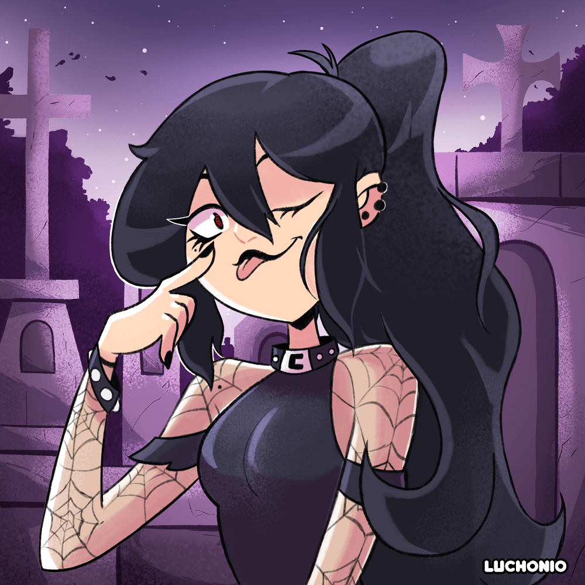

Galeria de Fantasia
Ambarine

Ambarine "knuckles witch" üëä es un personaje de mi amigo danigrex2n, el cual es una peleadora en un mundo lleno de magia y fantas√≠a, en este dibujo redise√±e a su personaje para que se adaptara mejor al estilo de dibujo tipo cartoon que manejo, al ser un personaje el cual gusta de las peleas tuve que dibujarla en una pose que demostrara toda su personalidad.
Vanessa Misterio

üåå Vanessa Misterio üåå este dibujo es el retrato del personaje de mi amiga Vanessa, el cual es una especie de ser angelical, en este dibujo resaltan mucho los colores de las alas en violeta y blanco las cuelas contrastan muy bien con el fondo.
Evelyne
üëª La tenebrosa Evelyne üò±, personaje del webc√≥mic con el mismo nombre ‚ÄúLa tenebrosa Evelyne‚Äù creado por @inksowl_comics, el cual trata de una chica que puede ver fantasmas y entidades demoniacas, este dibujo lo realice como parte de una temática en redes sociales lanzada por el mismo autor y creador del personaje, la cual consist√≠a en dibujar a su personaje a tu manera con un fondo aterrador. En lo personal encanta el dise√±o de su personaje el cual tiene una temática algo gotica, este fue uno de mis primeros trabajos con estilo cartoon.
Asajj Ventress

Este es un dibujo de Asajj Ventress el cual es un personaje de las series de clone wars el cual pertenece a la franquicia de star wars de la cual soy fan, en este caso combine un poco 2 diseños del personaje teniendo en cuenta su apariencia en ambas series, también opte por colocarla en una pose de pelea ya que es una especie de lord Sith.
Mommy Long Leggs Boceto

Fan art del video juego de terror Poppy Playtime del personaje Mommy long legs el cual es una especio de juguete gigante el cual tiene como característica principal la de poder alargar sus extremidades de manera exagerada para poder así atrapar a sus víctimas. En esta ocasión quise probar algo diferente y comenzar a dibujar criaturas.
El Batman
Dibujo de Batman inspirado en la película de The Batman, en este dibujo quise jugar un poco con las luces y los tonos de oscuros y cafes en la armadura de batman, a su vez el fondo esta compuesto por escombros y agua que corre por todo el mismo.